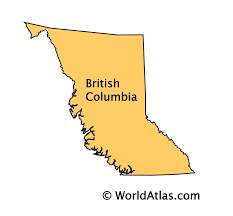

We live in a Beautiful province of Canada
www.destinationbc.ca/ The original name of the village was Witset. It was abandoned after a rockslide that prevented salmon from reaching the canyon. Witsuwit'en people then settled in Tsë Cakh (Hagwilget) and referred to the old village as Këyikh Wigit (often spelled Kyah Wiget).
What is the history of the Port of Prince Rupert? Our Port History
Prince Rupert was built in the 20th century as the terminus for the Grand Trunk Pacific Railway. Plans were drawn for a West Coast port of major stature and prime waterfront lands were reserved for port and railway development.
What is the history of Vancouver? Vancouver - Wikipedia The City of Vancouver was incorporated on April 6, 1886, the same year that the first transcontinental train arrived. CPR president William Van Horne arrived in Port Moody to establish the CPR terminus recommended by Henry John Cambie, and gave the city its name in honour of George Vancouver.